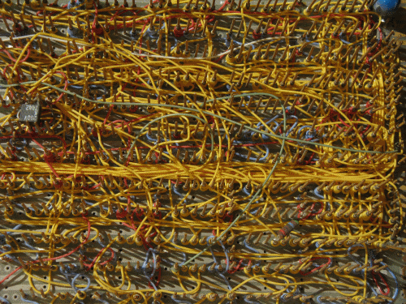

Дополнительные возможности
В этом разделе описаны дополнительные функции и инструменты проектирования в Logisim-evolution:
- Создание шлейфов (многоразрядных шин).
- Распределение сигналов по проводникам с помощью разветвителей.
- Цветовая маркировка проводников в зависимости от их состояния.
- Размещение компонентов с автонумеруемыми метками.
- Размещение компонентов в виде матрицы.

Далее: Создание шлейфов.